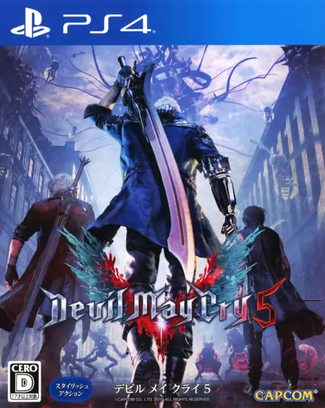
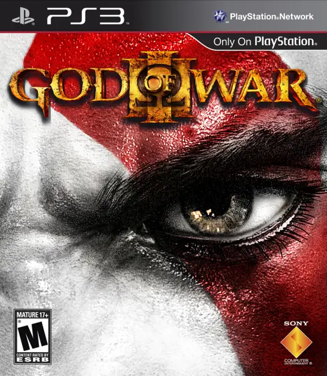
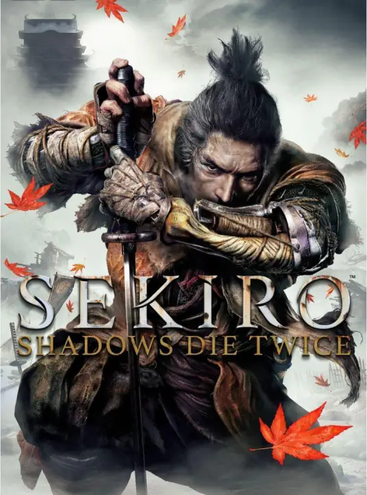
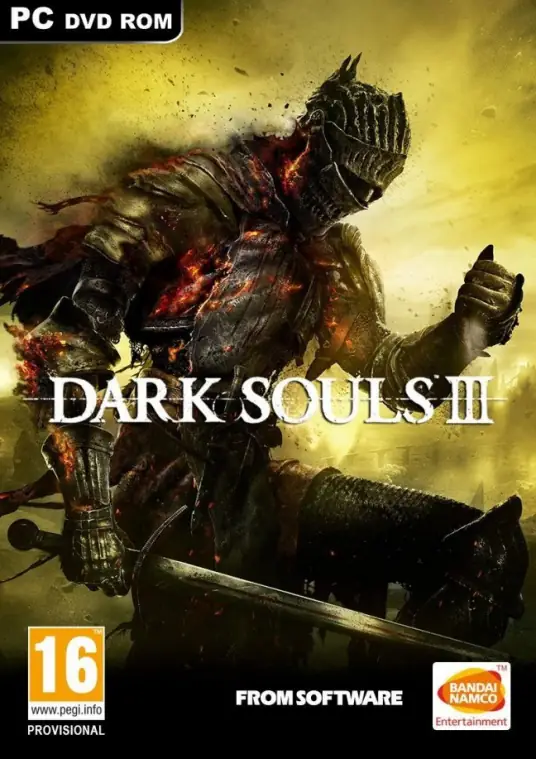
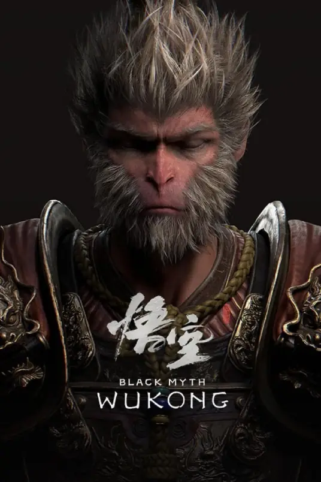
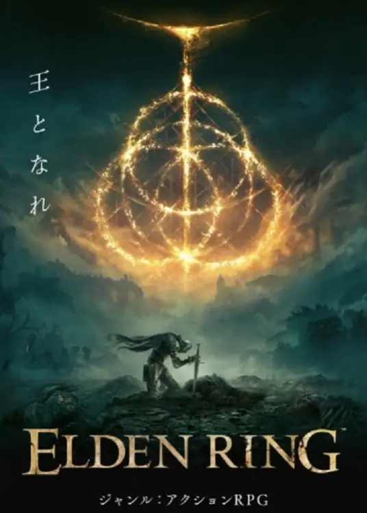

| 鬼泣5》是由日本CAPCOM开发的一款动作冒险游戏，该作是《鬼泣》系列第六部，且是《鬼泣4》的正统续作，故事发生在《鬼泣4》之后，于2019年3月8日发售，登陆PC、PS4、PS5 [16]和XBOX One平台 [1-3]。2020年10月22日，卡普空亚洲带来了中文版的《鬼泣5：特别版》光追详解视频，制作人Matt Walker对游戏中的光追实际效果进行了介绍和演示。 [5] 游戏剧情设定为城市出现大批恶魔，玩家需要扮演游戏角色参与对抗 [4]。游戏采用Capcom内部专有的RE引擎开发，使得游戏在图形保真度方面达到了全新的高度 | 在《战神2》中，击败阿瑞斯的奎托斯成为了新战神，庇佑并协同斯巴达军队展开征战。然而，众神之王宙斯利用阴谋削弱了奎托斯的神力并杀死了他，使奎托斯掉入了冥界。 受泰坦盖亚所救的奎托斯，在泰坦的指引下试图改变过去以逆转自己被宙斯杀死的命运。在经历种种磨难后，他杀死了命运三女神并回到被宙斯背叛的过去。但当奎托斯试图使用奥林匹斯之剑杀死宙斯时，雅典娜牺牲自己抵挡了他的攻击使宙斯逃脱，并揭示了奎托斯为宙斯之子，而宙斯也惧怕着奎托斯会重蹈他颠覆自己的父亲克洛诺斯的命运。 奎托斯回到了过去拯救泰坦，与泰坦们一起回到了当下的时空，宣告将颠覆众神的统治 |
| 特别的，有ARPG（动作结合角色扮演）游戏类型，因黑暗之魂的代表性被称为魂类游戏（魂游） | |
| 只狼：影逝二度》（Sekiro：Shadows Die Twice）是一款由From Software制作的第三人称视角的动作冒险RPG类游戏，玩家将操控一位忍者，拯救他的主人——拥有日本贵族血统的大能的御子，并向他的天敌复仇。该游戏已于2019年3月22日全球同步上市，并支持中文版。 [1] 游戏剧情将探索生死冲突不断的16世纪后期，残酷的日本战国时代。在黑暗、扭曲的世界，玩家与威胁生命的敌人对峙，活用义手装备各种致命武器，大显忍者身手，在血腥对抗中潜行、上下穿梭，与敌人正面激烈交锋。 2019年12月13日，《只狼：影逝二度》获得TGA 2019最佳年度游戏 | 黑暗之魂3》是由From Software开发的一款动作角色扮演类游戏，是《黑暗之魂》系列的游戏之一，先于2016年3月24日在日本地区全平台发行，随后于2016年4月12日在全球范围内发行。 后续DLC艾雷德尔之烬和环印城分别于2016年10月25日和2017年3月28日全平台同步发布。 游戏的主要舞台为洛斯里克王国。在那里，玩家肩负着阻止末世来临的使命，而末世则是由于火之纪元和那些前代黑暗印记持有者之间的冲突所引发的。为了应对这一事态，玩家需要去面对薪王——那些曾经传过火的英雄。无论结局如何，世界始终会在光与暗之间轮转。 |
| 黑神话：悟空》是由杭州游科互动科技有限公司开发 [38]，浙江出版集团数字传媒有限公司出版的西游题材单机动作角色扮演游戏 [40]。 该作以中国四大名著之一、吴承恩所著长篇小说《西游记》为背景设定，借用《西游记》自身的故事作为前传，讲述取经之后孙悟空因放弃佛位引发天庭对其再次征伐之后的故事。在游戏中，玩家将扮演一位“天命人”，为了探寻昔日传说的真相，踏上一条充满危险与惊奇的西游之路 [32]。 2024年8月20日，该作正式登陆PC [70]、PS5平台 [72]。该作通常被媒体称为“中国首款3A游戏” [66]。在发售三天后，该作的全平台销量超过1000万套，打破中国游戏历史记录 [69] 11月18日，据统计机构 VG Insights 披露，《黑神话：悟空》在 Steam 上的销量已突破 2200万份，收入超11亿美元。 [91-92] [96] [110] 2024年11月，获得TGA年度游戏提名 [111]。11月22日，《黑神话：悟空》获得2024金摇杆奖终极年度游戏和最佳视觉设计奖 [112]。 |  故事发生在名为“交界地”的地方，这里的人们拥戴永恒女王玛莉卡，也受到她的祝福。 所有接受祝福的人瞳孔中都有黄金一般的光芒，但也有些人因为各种原因失去了赐福，眼中的光芒消逝。这些人就被称为褪色者，并因此被逐出交界地。 某天因为作为祝福核心的“艾尔登法环”被击碎，祝福受到污染的半神们为了收集法环碎片发动了一场又一场的战争，导致世界变的满目疮痍，褪色者们因为法环破碎恢复了祝福。 而玩家们扮演的角色便是褪色者，玩家的目标即是收集法环碎片，挑战半神，最终成为交界地的王者并开辟新的时代。 |
| 返回目录 | |